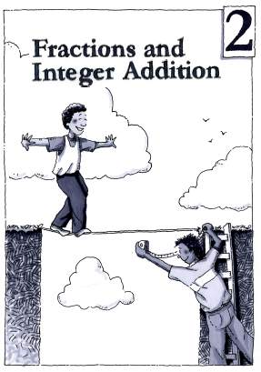

Chapter 2
Fractions and Integer Addition
Navigation is reserved for this future chapter. Add the chapter source later and these links can become active without changing the textbook structure.
Lessons
- 2 OpeningChapter 2 OpeningFuture unit
- 2.1.1Fraction-to-Decimal ConversionsFuture unit
- 2.1.2Rewriting Decimals as FractionsFuture unit
- 2.2.1Composing IntegersFuture unit
- 2.2.2Adding Integers and Rational NumbersFuture unit
- 2.2.3More Addition of Integers and Rational NumbersFuture unit
- 2.2.4Multiplication as Repeated AdditionFuture unit
- 2.2.5Multiplication of PortionsFuture unit
- 2.2.6Multiplying Mixed NumbersFuture unit
- 2.3.1Choosing a Scale and Graphing DataFuture unit
- 2.3.2More Graph ScalingFuture unit
- 2 ClosureChapter 2 ClosureFuture unit